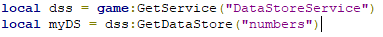
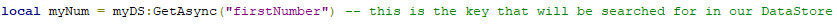

If you find an issue or mistake, please PM me on ROBLOX (MadScient1st), Twitter (@scientiist), or Discord (MadScientist#6277)
In ROBLOX and game development, you will often find you want to have persistent data about the player, or game in general. In ROBLOX, the main way to accomplish this through the DataStore Service.
http://wiki.roblox.com/index.php?title=API:Class/DataStoreService NOTE: Data Persistance is the predecessor of DataStore, it is quite old, and deprecated. If you find yourself with a game using Data Persistance, I recommend converting to DataStore.DataStore is often misunderstood and incorrectly used by newer scripters, but it's really quite simple and nothing to be scared of. Each "game" (Universe, if you prefer) in ROBLOX has shared DataStore, a common misconception being that each place has it's own DataStores, or that they're shared across all ROBLOX games.
To access a DataStore, you call the GetDataStore(name, scope) method of DataStoreService. It returns a datastore with that given name and scope. Scope will default to "global" if not specified.
Once you've grabbed your DataStore, you can read and write to it using the GetAsync, SetAsync, IncrementAsync and UpdateAsync methods. These are all pretty self-explainatory.
This first example should be run in a Script on the server (Preferably ServerScriptService). To start we just grab the service and a DataStore that we want.
Next we are going to use GetAsync to grab a specific number from our DataStore.
NOTE: If a key in a DataStore has never been set before, it will return nil.
After this, we're going to send myNum back into the DataStore.
Play with this example if you like, output the result to a Billboard or something
Hopefully you're a little more comfortable with DataStores at this point, so we're going to try something a bit more involved.
OrderedDataStore is a service similar to DataStore, but is different in that it only stores numbers, and is automatically sorted. At this current time of revision I don't actually know how ODS works, I plan on fleshing out this part of the tutorial later on